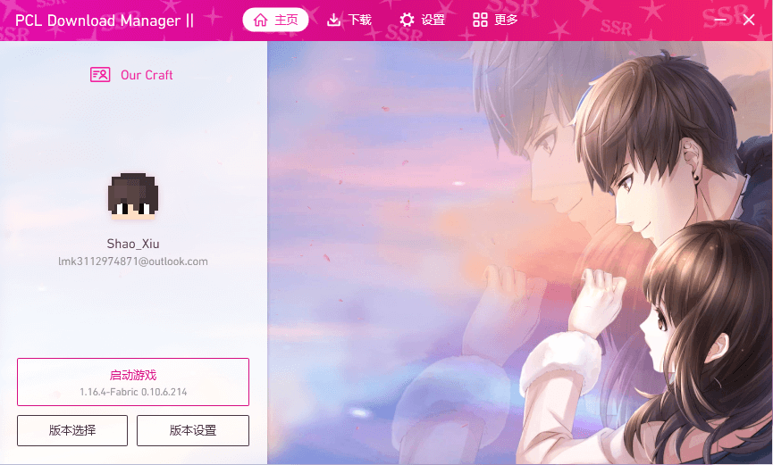
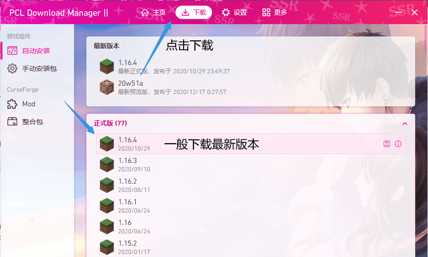
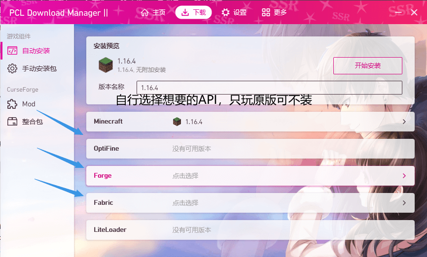
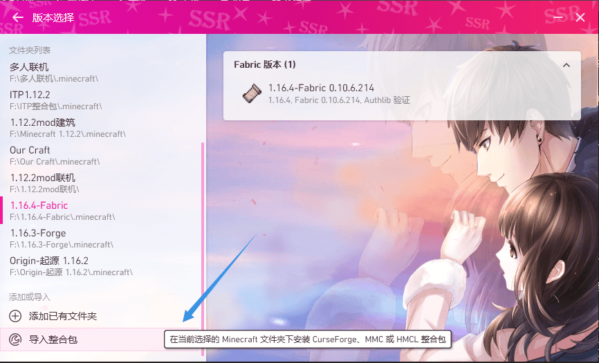
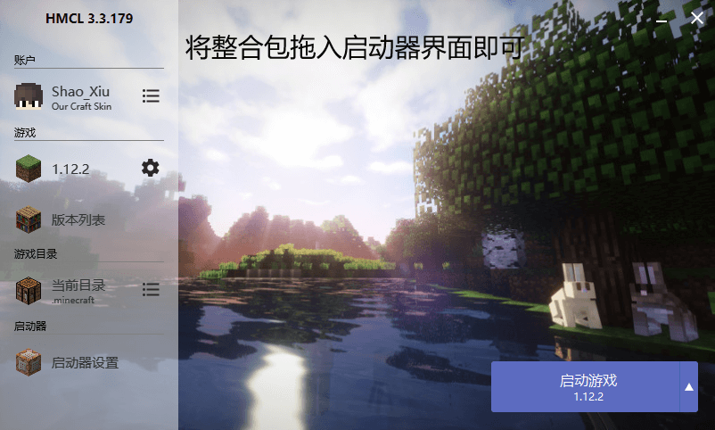
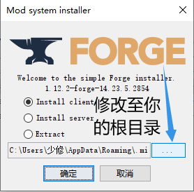
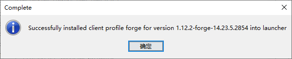
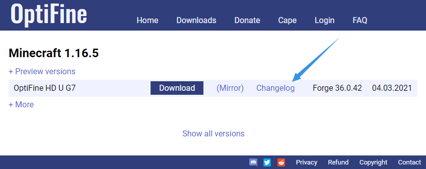
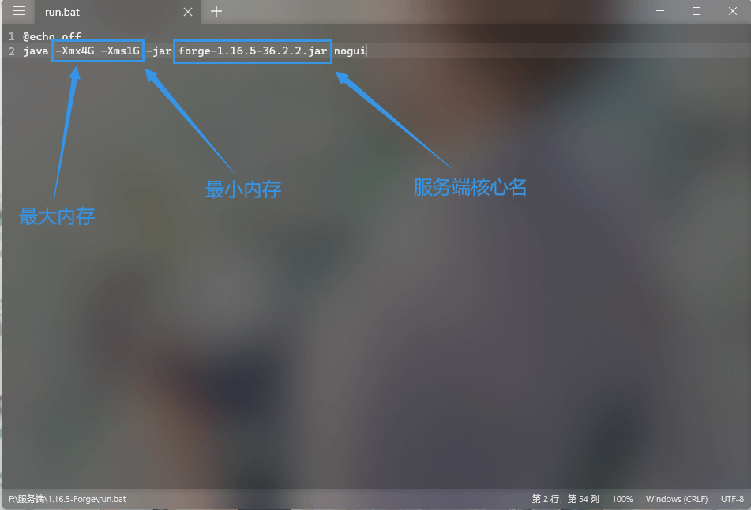
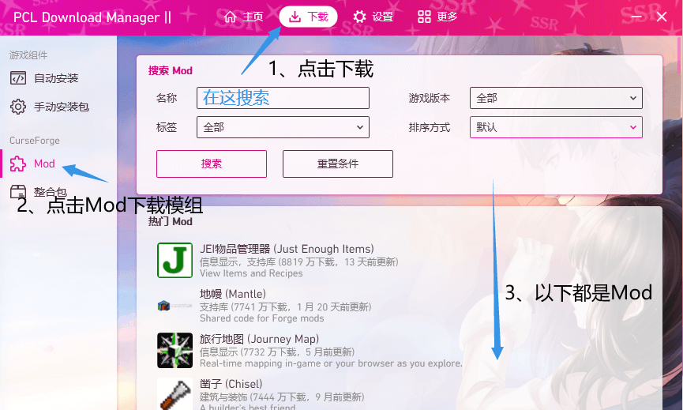

前言
这里提供国际Java版基础的教程及一些实用的资源给尚且不了解国际版MC的诸位玩家。之所以要针对国际Java版编写教程，而不是同时兼顾win10版、安卓手机版、xbox版本（统称为基岩版）与网易中国版，一方面是因为本站作者对于其他版本的认识较不充分，难以整理出系统的教程；另一方面则是因为国际Java版是所有版本里操作最复杂的，难度最大的。如果你能够学会Java版的所有操作，相信对于其他所有版本都是信手拈来。同时我们提供了更多适用于萌新的PDF教程（由Lrbs友情提供）与TXT文本文件，如果你看完这里的教程觉得一脸懵逼，可以在资源收录区浏览PDF文档；TXT文本则是对于MC方块id的整理（非最新版本）及MC的内存优化教程。
以下的教程将从购买正版的部分开始，如果你有正版或不需要正版（下面第一段提到了为什么可以不需要正版），可以在左上角打开导航栏跳到后面的内容；如果你有想法要获取正版，就从这里开始吧！
正版获取及下载
在教程开始之前，我们还需要明白一件最基本的事情：国际Java正版从未要求强制性购买。购买正版的实质只是获取一个账号，与你用的是什么启动器、加了什么模组、玩的什么地图没有任何关系。官方也默许玩家体验离线模式。唯一的区别只是正版能够进入开启了正版验证（如Hypixel）的服务器，在启动器或官网上更换皮肤能够更方便，除此以外与离线模式没有任何区别。而最简单的多人游戏教程，也可以用第三方皮肤站验证代替正版验证实现联机。
- 首先进入MC官网注册一个账号。目前Java版官网可以使用微软账号登录，没有的在界面点击注册：
- 验证码也已更换为微软提供，点击验证通过即可
- 随后点击购买Java版，经过若干网站后进入支付页面。支付工具推荐使用支付宝，银联或VISA也可以
- 购买成功后，在邮箱里会接收到mojang发送的邮件，里面包含官方启动器的下载链接，在官网里也有官方启动器的下载，但国内玩家最好还是使用国内的第三方启动器如HMCL、PCL2（没有的往下看启动器下载区），同样支持正版登录，且下载速度、对萌新友好程度也远优于官方启动器
- 不推荐桃饱、并夕夕、闲鱼等网站所谓的“正版账号”“正版迁移”，进阶教程“关于正版的那些事”里做了进一步阐述
- 官方启动器安装过程中会自动安装Java，它负责提供了MC的游戏环境。如果是非正版玩家，需要自己安装Java。安装包在资源收录区里有提供。安装包打开来不用管太多，小白一路点下一步就行，担心C盘内存不够的话，中间修改路径即可
- 下载其他游戏资源建议使用PCL2启动器（资源收录区有），界面简洁，功能强大，支持Forge、Optifine、Fabric等主流API的安装，且支持Mod搜索下载。有条件的话建议去爱发电赞助一个最新的PCL2内测版（只需要6.66RMB）。（赞助链接在启动器下载区）
- PCL2：
- 如果你不知道自己要下载什么版本，那么可以参考这里的建议：玩Mod和极端画质请去1.12.2，玩光影材质请去1.14.4，单纯体验原版，下载最新稳定版即可，不建议去1.7.10等年久失修的旧版本
- 如果还有一些细节不清楚，可以通过视频来填补：





安装整合包
整合包毫无疑问是最适合萌新游玩的资源，可拓展性使整合包也多种多样，有帮助萌新入门的基础整合包，也有适合老玩家狂肝的大型整合包。接下来我们将学会如何通过整合包安装游戏。
- 第一步，下载一个整合包。导航栏中的整合包下载区提供了链接以下载整合包。不熟悉英文的可以自行往整合包里加入汉化mod，即可汉化大部分常见的mod
- 第二步，安装整合包。首先我们检查下载好的整合包（一般为后缀.zip、.rar或.7z），用解压缩软件打开（没有的请在资源收录区里找到bandizip或7-zip安装包并下载安装）。如果里面有.minecraft根目录及一个启动器，那只需解压进一个空白文件夹即可。如果里面是config等一堆乱七八糟的文件夹（其实是.minecraft根目录里的文件），那么需要将它拖入HMCL安装，或在PCL2的安装页面点安装整合包，再选择这个整合包。没有启动器可以在资源收录区里下载
- 第三步，解压/安装完成后，打开启动器即可开始游戏


安装Mod
很多玩家，包括一些国际版玩家在内都不了解Mod是什么，在此先科普一下Mod的含义。首先，Mod可以修改MC原版的一些数据，例如增加物品、增加世界、增加附魔属性等，如工业、暮色森林、更多附魔；而有些Mod只是提高玩家操作效率，如R键整理和合成表。它们都属于插件的一部分，但不叫插件，因为方便与服务器的插件区分。它能修改游戏数据得益于一个叫Forge的API（类似于国际交谈中的翻译），是Forge把mod修改的部分告诉了MC原版，才使其作出修改。因此，我们安装Mod实际上的主体操作是安装Forge，安装Mod的部分只是简单的文件移动。
我们将Forge安装的步骤分为启动器自动安装与手动两种方式，玩家任选其一即可。
- 打开PCL2.exe（没有的看下面的启动器下载区），点击下载：
- 选择好游戏版本及需要的API后，点击开始下载，等待下载结束后即可启动游戏开始游玩
- 首先可以通过Forge官网下载Forge手动安装，注意了！！正常点下载链接会跳转到一个Adfoc网站，这个是广告。绕开广告下载的方法如下：右键复制下载链接，然后随便找个地方贴出来，你会发现有两个https://。把第二个https://前面的删掉，再打开删后的网址，就可以免去广告下载。但现在更建议的是使用第三方启动器一键安装，方便快捷
- 如果是使用官方的正版启动器，只需要下载到对应版本的Forge文件（通常叫forge.1.x.x.xx...xx.jar)，在安装完Java后直接双击打开，点击确定即可。非官方的启动器需要修改路径至你下载根目录一个叫.minecraft的文件夹（即游戏根目录），千万注意启动器有没有开版本分隔！开了的话无法直接安装Forge，只能在启动器里一键装
- Forge手动安装成功后会弹出一个成功安装的弹窗，否则安装失败，重复以上操作至成功为止
- 随后在.minecraft文件夹里手动创建一个叫mods的文件夹（也可以用启动器启动一次forge版本，它会自动生成这个文件夹），添加你想加的Mod进去（一般都为jar文件）。部分nt压缩软件会将Mod识别为压缩包，如果是jar文件则不用理会，直接丢到创建的mods文件夹即可，不需要解压
- 打开启动器启动游戏开始游玩
- Fabric的安装方式与Forge相似，须区分两者的Mod，互相之间一般不兼容
- Fabric一般需要额外添加一个叫Fabric API的Mod用于扩展兼容许多Fabric Mod
- Mod下载方式在资源区集锦后的Mod下载区里有提供
- 记得启动器要切换成Forge版本，不能仍然启动原来的版本
- 还有细节没明白的可以看视频：
自动安装法：


手动安装法：


注意：
安装光影与材质
首先仍然是普及一下光影的一些知识。光影的专业名称为着色器。它基于MC的接口（在Java版上也叫OptiFine或高清修复）修改了许多MC的光照效果，原理上你仍然可以理解为前面提到的Mod，只不过API由Forge变为了OptiFine（高清修复）。要点如下：
- 打开PCL2.exe（资源收录区有），点击下载，点击自动安装，选择自己需要的游戏版本后，在下面的OptiFine点击选择最上面的就能自动下载安装，然后在启动器切换对应版本打开游戏
- 点击进入OptiFine官网，打开后点击上面的Download，随后下载对应版本的最新OptiFine，可能会遇到与Forge类似的广告页面，点旁边的mirror或用同样的方法即可绕过。随后双击打开下载到的文件，像Forge一样安装
- 也可以作为Mod直接放进mods文件夹用Forge加载，但可能会有部分新版本的最新Forge与未及时更新的OptiFine不兼容。遇到这种情况最好前往OptiFine官网的更新日志检查支持的最终Forge版本并回退：
- Fabric+OptiFine需要再加一个名称为OptiFabric的前置Mod才能正常使用
- 随后在启动器里找到安装好的OptiFine版本（直接安装的新版本）或打开Forge版本（放进了mods文件夹），进入主界面打开设置-视频设置-光影，光影界面就出来了
- 点击打开光影包文件夹，将下载好的光影文件放进去（一般为.zip格式，不需要解压），直接在光影界面打开对应名字的光影即可
- OptiFine官网下载界面的Preview versions一般提供了OptiFine最新的预览版本，没有找到最新版本的正式版时可以看看有没有预览版
- 光影文件在资源区集锦后的光影下载区提供了一部分，可以去资源收录区或去Curseforge下载
- 如果安装光影后发现帧数非常低或很容易崩溃，应去光影切换界面检查一下底部是否为自己电脑的独立显卡。如果不是，应在显卡控制面板上设置全局启用独立显卡
- 材质包的安装过程简单很多，直接将压缩包添加至根目录的resourcepack文件夹里，再在设置->资源包中添加材质即可
- 光影的兼容性取决于OptiFine，一般来说大部分光影都能够兼容1.8.9-最新的版本，而1.7.10则被作为版本弃子处理，不建议用于加载光影
- 没有看明白的可以通过下面的视频了解：
自动安装法：


手动安装法：


注意：
多人联机
注意，如果在联机部分有看不懂的名词如IP、端口、内网穿透，那说明你需要补充网络基础概念。以下内容将会分为三个部分：网络基础概念普及、MC客户端联机以及开服联机。新大佬建议仔细阅读所有内容，这对于后续联机有很多帮助，前面的铺垫也更容易理解每一步操作的含义
- IP地址：我们进入服务器需要输入一个服务器地址，即IP地址。它的形式可以是数字的，如127.0.0.1，也可以是英文域名，如mc.hypixel.net。当然域名的作用只是让数字IP变得更有辨识度，在进入的过程中，你的电脑还会访问DNS服务器去获取到这个域名的实际IP，有时候输入域名却无法进入服务器就是因为你访问的DNS服务器里没有这个域名的IP记录，电脑没拿到实际的IP地址自然也就进不去服务器。解决方法是在网络设置更换你的DNS服务器地址，一般可以设为8.8.8.8，备用114.114.114.114
- 端口：有时候你经常看得见服务器地址后面带着一个数字，比如play.shaoxiu.net:30000，这个30000便是端口。端口的作用就像是你房子的门，要进入一个服务器就得经过它的“门”——端口。要注意的是，很多没有带端口的地址是因为MC默认进入25565这个端口，所以服务器地址可以省略掉它。例如：play.shaoxiu.net=play.shaoxiu.net:25565
- 内网穿透/端口映射：首先我们需要了解内网与外网的区别。内网就是你家里路由器连着的各个设备提供的一个网络环境，就像是你的房子，而外网则是其他的房子。内网穿透/端口映射即意味着把家门打开，这样外人就能进来。你可以自由控制内部的哪个端口穿透/映射到外部的哪个端口，但你发给别人的地址一定是外网IP+外部端口
- 对于少数两三个人而言，建议使用联机而非开服。原因有两点：1、联机的稳定性要差于开服（即无法24h运行，服主即开通局域网映射的一方无法退出游戏），但对于性能（内存、CPU）的占用要优于开服，人数少会弥补稳定性上的缺点；2、开服需要自行寻找各类核心，了解不同插件Mod的API等大量基础知识，且少数人无法体现出插件管理的作用
- 如果你是正版玩家，可以直接往下看映射部分。而离线模式登入的玩家需要了解一下验证的问题。由于自1.8开始客户端之间互相联机需要通过正版验证，我们需要想办法绕过这个验证才能进入游戏，否则映射成功也无法进入游戏
- 离线玩家绕过正版的方法有两种。
- 第一种（较为推荐）：在顶部导航栏点击皮肤站，在里面注册一个自己的账号。收到邮件验证成功后，在用户中心将Yggdrasil地址贴入PCL2的外置登录页面（版本设置->设置->下滑到底部->修改登录方式为“第三方登录：Authlib-Injector”），或者直接点按钮拖到HMCL可以直接添加认证服务器地址。随后输入注册的账号密码即可进入游戏并进行下一步联机准备。此方法的好处是可以自定义皮肤与披风，但联机的人都需要注册此皮肤站的账号并登录方可进入
- 第二种：在PCL2搜索“简单联机”Mod并下载。版本高于1.12.2的需跳转至mcmod网页在评论区找到最新版本的下载链接。随后启动游戏后，关闭config文件夹里的server.properties配置文件的正版验证（online-mode：true->false）再重启客户端即可。此方法的好处是其他玩家可以用离线账号直接进入，甚至可以修改配置文件固定内网端口，免去每次开局域网都要修改映射的麻烦，但自定义皮肤披风需要其他Mod解决
- 第一种方法-P2P联机：打开PCL2，进入更多->联机。在客户端进入单人游戏地图后，服主打开对局域网开放，并点击PCL2的“创建房间”，将端口号输进弹出的窗口，随后你就发现多了一个“我的房间”。单击一下即可复制你的房间码。将它发给你的基友，基友再在PCL同样的联机界面点击“加入房间”，输入房间码即可获取到一个IP:端口的地址。将它输进多人游戏->直接连接的服务器地址栏里即可进入服务器
- 第二种方法-内网穿透：进入游戏后，服主需要打开对局域网开放，并将左下角开放的端口号输入映射软件的内网端口位置（这里以Netplus为例）：
- 填写完后在主界面点击启动，再点击复制连接地址，把它发给别人，就能进入你的服务器了
- 对于联机还有疑问的，可以看如下视频：
- 但开服其实并没有很难。开服的优势是可自定义的东西很多（添加插件便于管理玩家、稳定性强于联机）。我们可以通过以下操作来搭建一个MC服务器：
- 获取一个能够运行Minecraft服务端的电脑。可以是家里的现成主机，也可以是淘宝等平台的面板服。但不建议租用阿里云、腾讯云、华为云等平台的学生机。理由：性能低于目前MC服务器的要求，体验会差很多
- 如果你是从淘宝租用的面板服，接下来只需要咨询客服即可开服（当然你愿意折腾的话也可以往下看手动的部分）
- 搭建一个开服运行环境。只需要安装玩MC用的Java即可，已安装的可以不用理会
- 在资源群集锦的联机下载区找到自己想要的服务端（进阶教程的联机与开服细节讲述了不同名字有什么用处），去对应官网下载服务端核心，随后把它放到一个空文件夹，并在旁边创建一个记事本文件（任意命名为xxx.txt，没有后缀请在你的系统资源管理器上方找到“查看”，点击展开并勾选“文件扩展名”）随后将下面这段代码贴进去：
- 将代码中的xxx.jar改为你当前下载的核心名，服务器的最大内存、最小内存都可以按照下图中位置设置。随后将run.bat文件与核心放在同一文件夹里，双击run.bat启动
- 随后保存并将xxx.txt修改为xxx.bat，弹出窗口点击确定，随后双击这个bat文件即可启动服务器
- 第一次开服通常都会因为没同意eula协议而失败（部分服务端将协议内置在CMD里，直接输入同意即可）。这时打开目录里生成的eula.txt，将里面的false改为true，重新打开bat，启动成功
- 基岩版服务端只需要去官网下载到安装包，解压后直接打开就能启动服务器，不需要其他操作
- 启动成功后，将内部端口（Java版服务器默认为25565，基岩版服务器默认为19132）输入映射软件的对应位置，再在客户端多人游戏里创建服务器，地址输入外网ip:外网端口号即可连入（用英文输入法，中文的：与英文的:不一样）
- 如果是离线模式玩家联机，一般需要用记事本打开server.properties文件，在里头找到online-mode=true并修改为false
网络基础概念普及：
联机部分：
注意：以下两种方法任选其一


开服部分：
@echo off
java -Xmx4G -Xms1G -jar xxx.jar nogui

启动器下载区
- 官方正版启动器的安装包在资源收录区有提供，或直接去MC官网下载
- 国内更建议玩家使用第三方启动器，原因：1、官启下载慢，需要搭配加速器食用；2、官启默认将游戏下在C盘且难以更改；3、官启安装所有第三方资源都只能手动，非常繁琐；4、官启与第三方API（Forge、Fabric、Optifine等）兼容性不强，优化也相比第三方启动器稍差一些
- 第三方启动器首推PCL2，资源收录区提供了PCL2正式版供大家下载，也可以自行前往作者的正式版帖子下载点此进入正式版PCL2下载页面
- 也可以用HMCL下载，资源收录区里有提供，或在HMCL官网下载点此进入HMCL官网
Mod下载区
- 找Mod的方法：打开PCL2.exe（如果没有，请往上滑至启动器下载区），点击下载-Mod，在搜索栏输入搜索自己想要的Mod，可以快速找到大部分Mod
- 找到对应Mod后打开对应页面，然后检查一下“前置Mod”，如果有的话必须要点击前置Mod名称先下载，否则无法进入游戏
- 这种方法可以绕过Curseforge上复杂的谷歌验证码检测和高延迟，能更方便地下载Mod
- 在MCMOD页面中的原帖链接进入Curseforge的网址，需要通过国外验证码。部分玩家可能无法正常加载出来，方法同进入MC官网一般，添加谷歌上网助手插件即可，同时如果该网站速度太慢，可参考以下视频里的方法来给Curseforge网站提速：
- 也可以用MCBBS中文论坛来找，但搜索需要耗费金粒，且资源更新不一定及时

光影下载区
资源收录区提供了主要的一些免费光影，能从低配电脑烧到高配电脑，不用担心不够用。
- B站、百度贴吧还有更多光影作者们魔改的光影，也可以赞助获取更多高端的光影，以下为高端光影推荐：
- （赞助获取）（光追）Continuum RT -by Continuum
- （梦幻风）JMSEUS FCM -by skammy
- （梦幻风）Lrbs Sunny Day -by Lrbs
- （写实风）（光追）SEUS PTGI HRR Test 2.1 GFME -by GeforceLegend
- （写实风）iterationT -by Tahnass
- （创作中）Arlic -by Hypercol Studio
- OptiFine提供的国外光影集合网站
- iterationT 2.0.0展示视频：
材质包下载区
资源收录区同样提供了一小部分免费材质包供下载，版本会随时间更新；也可以在许多平台上找到自己喜欢的材质包，这里提供了一些链接：
- Curseforge材质区
- （赞助获取）（现代写实）UMSOEA
- （赞助获取）（现代写实）Ultimate Immersion
- （可赞助）（现代建筑）（国产）IT-Project
- （可赞助）（现代写实）（国产）TMEO
- （可赞助）（生存写实）（国产）XEHD
- （可赞助）（生存写实）（国产）ER2K
- PS：可赞助的意思为有免费和需要赞助获取两种资源，免费版可自行进入对应QQ群或在材质网站下载，赞助版需要进入对应赞助页面，方式与正版的获取类似
整合包下载区
这里主要提供能够下载整合包的一些主要站点，资源收录区只提供本站服务器的客户端整合包。
- PCL2支持搜索下载Curseforge上的整合包，可在资源收录区获取最新正式版或在爱发电获取内测版
- Curseforge整合包区
- MCBBS中文论坛
- 度娘
联机下载区
联机的教程视频简介中提供了一部分链接，这里只提供比较普遍使用的部分服务端直链，以及一些其他的服务端集锦。
关于MC正版的那些事
到目前为止，MC主要分为以下几种：MOJANG经营的Java国际版（Java Edition）、微软经营的基岩版（Bedrock Edition），以及网易代理的我的世界中国版。三者都有正版凭证或正版授权，不存在盗版。抛去基岩版及中国版不谈，MOJANG的国际Java版有以下4种账号：官网获取的正版、淘宝80%以上都是的迁移正版（也叫迁移黑卡）、通过一些网站免费刷的测试版、离线模式。
- 官网获取的正版是货真价实的正版，邮箱能够收到你的交易凭证用于申诉，如果要支持正版，请尽量通过官网获取
- 淘宝、拼多多、闲鱼等平台的所谓“迁移正版”、“国际Java正版”如果价格低于官网提供的价位（目前为165RMB），那么极有可能是黑卡。黑卡的渠道主要是一些不常玩游戏的玩家，他们的账号可能会被盗取，或通过冻结银行卡等诈骗手段非法获取MC正版号。这样的账号一般都不会提供交易凭证给买家，其最终的结果也是要么被号主申诉追回，要么被MOJANG永久删号，只有一部分能够存活下来。因此尽量不要选择第三方平台的Java正版
- 测试版在部分第三方平台会有渠道获取，可以登入官方的启动器，但无法换皮肤，仅可以通过正版验证，不建议花费功夫去获取，有这功夫不如去导航栏注册皮肤站
- 离线模式是目前大部分国际版玩家玩的主要模式，只能进入关闭了正版验证的服务器，但可以通过模组实现自定义皮肤，适合单机游玩
- 目前win10版的激活码已失效，win10基岩正版需要去win10应用商店获取，但如果你的电脑没有配置过低的问题或没有RTX、RX6000系列以上的显卡，不建议游玩win10版
Mod冲突解决方法
如果你是一个刚入门的Mod玩家，那么这个部分是最适合你的教程。Mod冲突由很多方面引起。接下来将列举最常见的几种可能：
- 缺少前置，不过现在一般都会在界面用英文提示你缺少哪些Mod，拿着显示的Mod名称按照Mod安装教程所属操作即可
- 游戏版本错误，添加的部分Mod版本并未与当前MC本体的版本对应。只需换成对应版本，非前置Mod可以考虑删掉
- Mod版本错误，添加的前置Mod版本过低或过高，无法兼容添加的Mod。使用PCL2下载符合版本要求的Mod即可
- Mod内容之间的冲突，例如1.12.2的高级火箭通常都与其他很多Mod不兼容，交错次元与OptiFine不兼容。如果你的英语基础足够好，且了解一些基础知识，可以在闪退后在根目录打开crash report文件夹翻看最新日期的报告，通常都能够找到答案；如果你是个英文小白，就只能通过分批删减或添加的方法一个个的筛出错误Mod（最笨但实用）
光影与材质基础概念
鉴于光影与材质在改善MC画质上相辅相成，故在此将两者放在一起讲述。在这之前，很多人估计都会好奇，为什么一个几兆的光影压缩文件包就能带来翻天覆地的变化，亦或是总觉得自己玩的跟视频看的画质天差地别，在这里我们先普及一下光影与材质对于硬件的要求：
- 很多人都应该知道光影与材质文件往往都附带着“高配”“中配”这些字眼，那么高配是什么概念呢？
- “配”即配置要求。光影最需要的是显卡性能，在此以SEUS系列为例来讲述。SEUS给MC带来了一个全新的画质，也几乎可以说是光影界最经典著名的光影，同时各种衍生的版本如SMUS、JMSEUS FCM、iterationT Next、Lrbs、AE-Shader等等，都带来了各有特色的效果与画质（同时占用的性能也更多）。SEUS V10-SEUS V11都属于一个系列的光影，用显卡来衡量的话，台式大概GTX1050Ti-GTX1060 5G可以达到流畅的60帧，而笔记本则是GTX1060 6G才有同样的帧数。SEUS Renewed系列属于V10与V11取长补短的结合体，画质超过二者的同时对性能要求没有上升很多，目前笔记本大概GTX1650可以达到60帧，台式则是GTX1060 6G。剩下的光影在资源收录区都有标注，可以自行按照这个标准上下调整。低配的（如Chocapic13V3系列、SVS系列）即使是GTX750Ti也足够了，而高配（iterationT Next）台式机需要GTX1660super才可能达到60帧（对着天空帧数会暴降）
- 很多人都说材质吃电脑CPU，吃显卡，但实际上它主要吃运行内存，CPU和显卡只要不是接近报废的或早已淘汰的，都不会影响到帧数。要想知道一个材质包具体吃多少内存，是不可能根据分辨率简简单单就判定的。影响到运行内存的因素有很多，除了分辨率外还有贴图覆盖率，还有在覆盖率之外的法线贴图、CTM等，甚至还有运行内存（同样的材质8G与16G都能运行，但占用的内存根据各自的空余内存也不同）。这些因素叠加在一起共同影响着运行内存。因此多少分辨率吃多少内存永远不可能有确定的答案，最好的方法是自己一个个尝试
- 很多人也觉得MC吃电脑CPU，然而实际上添加了光影、材质、Mod的MC吃显卡、吃内存、吃硬盘，就是不吃高端CPU。因为CPU占用拉满的时候只有两次：MC启动后加载游戏，以及进入游戏后加载地图。同时由于MC没有多线程优化（forge已经添加了多线程优化，但仍然还是吃主频，优化只是顺带的），导致最终需要的CPU一定是主频高的，而不是核多线程多的。像服务器主机经常使用的Intel至强处理器就不适合玩MC这种游戏
联机与开服的细节
服务端都是什么呢？我要开哪个呢？很多萌新在开服时通常都有这个疑问。这里假设你已经会开服的基本操作（下载服务端核心，txt改bat，同意eula，了解插件），我们来说下主流的服务端以及功能：
- Minecraft Server：官方服务端，可用官方启动器下载。功能与MC原版一致，无法添加任何Mod及插件
- Forge官服、Fabric（地毯端）：通过安装器得到的服务端，功能与客户端一致，可以添加Mod，但无法添加插件，优化也较差
- Spigot、Paper：Spigot支持Spigot的插件，不支持Mod，Paper是Spigot的进一步优化版本，对插件兼容性也有提升
- Catserver、Mohist：两个服务端都类似，都在1.12.2，Mohist还支持1.15.2以上的更高版本。二者都支持Mod与插件，属于Mod服里优化最好的服务端，适合萌新使用
- Arclight：国内作者开发的支持Mod与部分插件的服务端核心，适合高版本Mod体验，部分基础插件也满足了管理
- Sponge：一个服务端系列，分插件服与mod服两个版本，优化介于Forge官服与Catserver、Mohist之间，但繁杂的操作使其只适合开服老手使用
同时说一下一些其他的细节：
- 如果你想把服务器地图换回客户端联机使用，千万记得备份地图或先把背包物品放在箱子里！本地客户端里你自己的信息储存在地图的level.dat，而服务端里的信息储存在playdata，直接加载服务端的地图会让你在服务端的所有成就、背包物品与等级被原有客户端完全替换
- 勿开倒车回1.7.10。如今年久失修的1.7.10Mod数量远少于1.12.2，优化上相较Catserver也远远不如，支持的光影也越来越少
- 1.8.x目前主要剩下PVP党还在玩，1.12.2作为1.7.10的替代品也超越了1.7.10，1.14.4/1.16.5主要用于体验材质光影，最新版本用于体验最新的原版内容，不建议混淆开服方向与版本（比如1.16开Mod服，优化会很糟糕）
- 最好了解服务端结构，哪个文件干什么，哪个文件夹又是什么数据，通常翻译一下名字也就基本能知道功能是什么，这对于数据控制很有用